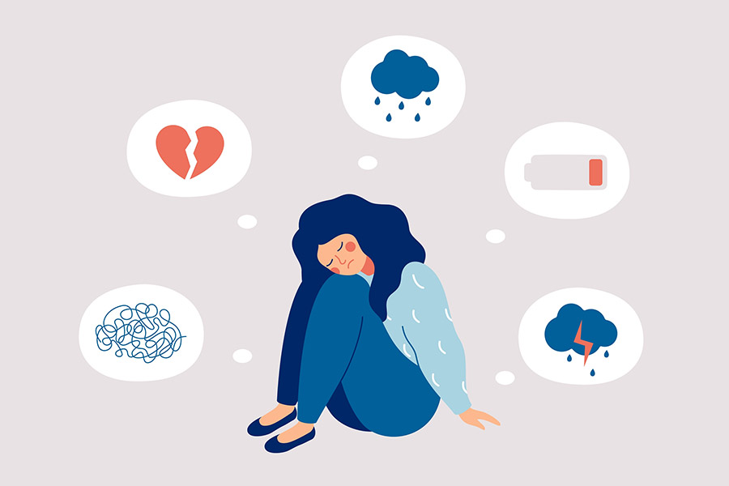
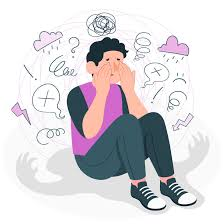

¿Qué es la salud mental?
La salud mental, es un estado de bienestar psicológico, lo que hace que las personas puedan enfrentar diferentes situaciones de su vida, y procesen distintas emociones, tales como, estrés o felicidad; esto ayuda a desarrollar todas las habilidades para manejar las emociones. La salud mental es fundamental para el ser humano, es la base del bienestar de las personas, esta nos ayuda a establecer relaciones interpersonales y a al buen manejo de las emociones en todo tipo de situaciones.

¿Qué enfermedades tiene la salud mental?
Como todo lo que tiene que ver con la salud, se pueden presentar enfermedades mentales, o también conocidas como trastornos mentales; estas son afecciones mentales en donde el pensamiento y el estado de ánimo se ven afectados.
La depresión
La depresión es uno de los trastornos mentales más comunes, sobre todo en la adolescencia o el comienzo de la adultes; la depresión es trastorno caracterizado por un bajo estado de ánimo y sentimientos de tristeza persistentes, lo cual químicamente alteran el comportamiento, las ganas de actividad física, pensamientos y hasta apetito, también es un trastorno que puede tener como consecuencia el suicidio.
Por otro lado, para esta enfermedad, no hay solo una explicación emocional, todo lo contrario, la explicación química de esta enfermedad es bastante interesante, pues la depresion quimicamente altera los neurotransmisores, estos son aquellas sustancias quimicas que se se encargan unicamente de transmitir las señales entre las neuronas y el sistema nervioso. Los neurotransmisores que se afectan con esta enfermedad son la serotonina, la dopamina y la norepinefrina; a continuación explicare cada uno, la serotonina se encarga de regular el estado del animo, el apetito y la temperatura corporal; la dopamina ayuda especialmente al cuerpo a realizar actividades motrices y el movimiento; por ultimo la norepinefrina sirve para la funcion nerviosa de todas nuestras celulas. Por esto mismo la depresión es nuna enfermedad tan peligrosa para la vida de una persona.

Sintomas de la depresion
- Sentimientos de tristeza.
- Perdida de interes al realizar actividades.
- Cambio de apetito.
- Problemas al dormir, desde dormir en excso hasta insomnio.
- Falta de energia.
- Dificultad para concentrarse.
- Pensamientos de muerte o suicidio.
La ansiedad
La ansiedad es otro trastorno mental de los que podemos sufrir, es un estado constante en donde se siente temor e inquietud; nos hace estar intranquilos y con una gran sensación de peligro.

Sintomas de la ansiedad
- Sensacion de miedo.
- Aumento del ritmo cardiaco.
- Sensacion de nerviosismo.
- Problemas al dormir, desde dormir en excso hasta insomnio.
- Respiracion acelerada.
- Dificultad para concentrarse.
- Pensamientos de muerte o suicidio.
La ansiedad y la depresion muchas veces van de la mano, son dos trantornos mentales muy comunes en los seres humanos, por esto mismo quiero mostrar una tabala comparartiva acerca de los sintomas de estos dos y como reconocerlos.
| Depresion |
Ansiedad |
| Sentimientos de tristeza. |
Sensacion de miedo. |
| Perdida de interes al realizar actividades. |
Aumento del ritmo cardiaco. |
| Cambio de apetito. |
Sensacion de nerviosismo. |
| Problemas al dormir, desde dormir en excso hasta insomnio. |
Problemas al dormir, desde dormir en excso hasta insomnio. |
| Falta de energia. |
Respiracion acelerada. |
Tratamientos
Hace algunos años en los países del primer mundo, en la década de 1950, en la sociedad menos del 1% sufrian de depresión y de más enfermedades mentales; en la actualidad un 15% de la sociedad sufren de estas enfermedades anteriormente mencionadas.
Por lo anterior, hoy en día, hay muchos tratamientos para superar estas enfermedades; al ser enfermedades mentales, los doctores que estan destinados a resolver este caso son los psiquiatras y psicologos, quienes a parte de recomendar y dar un seguimiento con terapias, tambien esta la opcion de medicamentos, ya que estos ayudan a reponer quimicamente las falencias que estas enfermedades causan.